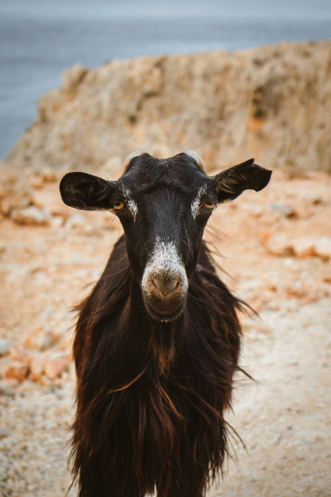
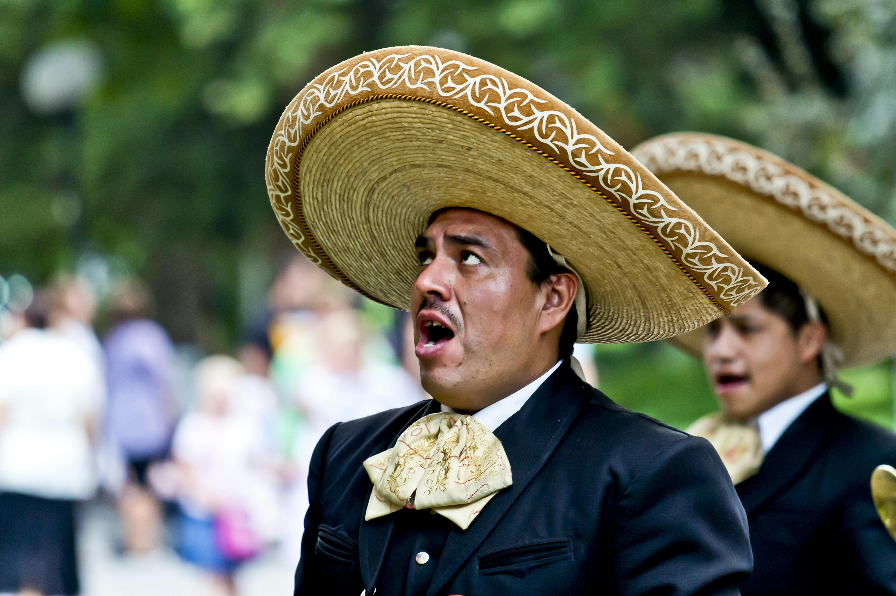

The Goat Messi
Lionel Messi is known as the GOAT in football due to his skills and consistency. A key player for whatever team he plays and has over 800 career goals and more than 350 assists making him the only player in history to achieve these milestones. He is like no other and shows his dominance with his World Cup Win in 2022 and Copa America win in 2024.
El Rey aka Vicente Fernandez
A mariachi representing the most famous one called Vicente Fernandez.He is known for his powerful voice and influence in Mexican music. Over a 50 year career, he released more than 100 albums and sold over 50 million records worldwide.
The Start
They are posing in front of cars posing with a soccer ball. I see it as a sign that they will eventually become some famous soccer player and that picture will be iconic is what I get from the photo.